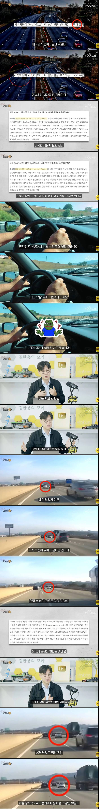
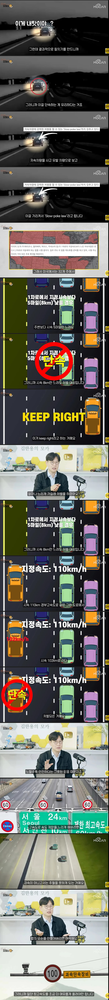

한국 도로교통 수준 ㄹㅇ 낮은편임
면허발급수준부터 규정도 개도국시절 수준낮은데서 많이안변해서
그릇된 믿음 ㄹㅇ… 제발 본인이 옳다는 전제부터 버리고 판단하지 말고 남들 신경 끄고 걍 각자가 법규 준수하면 됨.
싸우는거 자체가 시스템 문제임
법을 만들면 싸울일 없음
1) 도로의 흐름, 2) 사고가 나지 않는 운행
이게 제일 중요한건데
다른 사고 영상들보면 쟤가 과속했으니! 쟤가 어떻게 있으니까! 하면서 참교육이니 뭐니 하는 영상 많이 보임. 그런데 정작 블박차도 흐름대로 운전 안하고 나만 옳으면 돼! 하는 식으로 운전을 하니까 결국 사고가 나는거거든
자기는 사고가 안나겠지만, 그 과속을 하던 차가 사고가나면, 그 여파에 휘말린 차량들은 뭔죄임
영동고속도로랑 세종포천고속도로 타보면 일단 빅딸배들 부터 최하위 차선에 고정적으로 박아두지 않고 승용차들한테 뭐라고 하든 답이 없다는걸 느낄거임
진짜 화물차는 추월금지시켜야됨 ㅋㅋㅋㅋ
3차로와 2차로 장벽서는데 그걸 추월하겠다고 1차로까지 꾸역꾸역 들어오면...ㅅㅂ
진짜 ㅅㅂ 세종포천 ㄹㅇ 1차로 추월할때만 빼고 재깍재깍 2차로로 복귀하는데 빅딸배랑 버스 2차로에서 정속주행하는거보면 야마돌던데
이런거 다 신고되나 근데 좀 오래찍고있어야겠지?
빅딸배 ㅆㅅ들 터널 진입전에 추월할려고 1차선 들어오는거 보면 개패고 싶음
예전 주간주행등 등장 전에 대낮에 라이트 키고 다니면 등화점등 조작 불이행 잡던 것 처럼
'흐름보다 느려? 너는 운전 및 조작에 집중을 안 하고 있다' 로 접근한건가 보네
경부고속도로 서울 인근에서 4차로보다 느린 속도로 2, 3차로 달리는 차량들 만나면 그것도 속터짐 ㅋㅋ
내가 우측 차로보다 느리다 싶으면 우측 차로로 내려가고
추월 끝났으면 제발 하위차로로 사라지도록 문화 개선좀 하구
지정차로제 단속을 조금 더 적극적으로 했으면 좋겠음
살아남은게 강한거라는걸 알지만.
습관과 교육의 중요성을 느끼는게 뭐냐면,
나보다 운전 최소 20년, 30년은 더 하셧을 것 같은 택시기사님들 만나도
어느분은 정말 잘하시지만,
대부분이 진짜 운전을 어떻게 배운거지 싶을 정도로 못함.
엑셀, 브레이크 밟는 것 부터 다시 가르쳐야할 수준임. 차가 우우우우웅 이런게 아니라
웅 웅 웅 웅 이렇게 가는거 보고 기겁함.
붕끽붕끽붕끽붕끽붕끽붕끽붕끽붕끽붕끽붕끽붕끽붕끽붕끽붕끽붕끽붕끽붕끽붕끽붕끽붕끽붕끽붕끽붕끽붕끽붕끽붕끽붕끽
1차로 저속 주행 충들은 지 애미 칼 맞아서 뒤져가도 1차로에서 저속 주행할 새끼들임
고속도로 진입하는 순간 내부 자동차들에 자율주행 ON되면서 시스템 제어대로만 정속주행 하면 좋겠다
사고율 0%될듯
모든 차가 그게 되면 어느 정도 가능해질 듯
갑자기 급 궁금한데...100km도로에서 2차선에서 100km로 달리고 있는데 1차선에서 나를 앞질러 가는차가 있을때 그걸 과속으로 신고 할 수 있냐? 최고속도 제한이 모든 차선에 다 같이 적용되니까 문제인건데 1차선은 120 / 2차선은 110 이렇게 차등을 두는건 어떤가싶네?
우크라이나에는 이미 있긴 하더라 1,2차선 130 3,4,차선 110 5,6,차선이 8차선 이런식이었던거같은데
우린 과속단속은 오직 경찰의 전문적인 장비에 의해서만 가능함
중부는 뭐 1차선으로만 다녀서 상관없음ㅋㅋ
보통 이 논란은 최고속도 지속주행이기 때문에 이건 허수아비 패기에 가까움
과속충은 그냥 슝 사라지지만 기어가는병신은 내눈앞에서 계속 길막하니까 더열받게함
도로설계규정부터 바꿔야할듯
도로의 흐름에 위배되는 운행도 바람직 하지 못한데
그 바람직하지 못한 행동을 더더욱 해선 안되는 1차로에서 하는 건 분명한 문제임
1차로 저속충은 과속충을 ㅁㅊ놈이라고 하고
1차로 과속충은 저속충을 답답한 놈이라고 하는 좀 가볍게 느껴지는게 있는데
저속이 안전하다는 저 그릇된 믿음도 잘못인걸 좀 제도적으로 알려 줄 필요가 있음